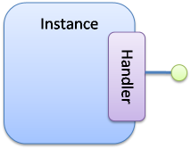
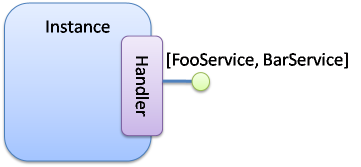
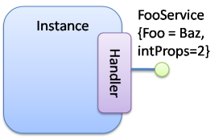

Providing OSGi servicesThis handler allows publishing OSGi services. It manages:
 A simple exampleThe following code snippet shows a simple class implementing the FooService interface: public class FooProviderType1 implements FooService { private String m_foo = "foo"; public void foo() { System.out.println("foo " + m_foo); } } To provide a service, the implementation class NEEDS to implement the service interface. By the way, it guaranties that each methods of the service interface are implemented. To provide the service, the component type needs to declare the providing: <component className="...FooProviderType1"> <provides/> </component>
The <provides/> element suffice to declare that each instance of this type will provide the FooService. Indeed, the provided specification can be discovered by analyzing the implementation class. By default, all implemented interface are published in the same service registration. iPOJO looks down the entire inheritance tree. Service PublicationThe provided service handler manages the service publication and providing. For each declared provides, the handler register a service. The service is published as long as the instance is valid. If the instance becomes invalid, the service is removed from the service registry. By default, it publishes all interfaces implemented by the implementation class of the component class. It collects all super-interfaces (interfaces implemented by implemented interfaces and by the super class). However it is possible to set exposed specifications with the specifications attribute to avoid to expose all collected interfaces. Note: In the 1.0.0 version, the specifications attribute was named interface. The following xml snippet is equivalent to the previous example: <component className="...FooProviderType1"> <provides specifications="...FooService "/> </component> If the implementation class implements several interfaces, all these interfaces are published by default in the same service publication. You can use the specifications attribute to set published service interfaces. If you want to publish several interfaces, you can use the following syntax: <component className="...FooProviderType1"> <provides specifications="{...FooService, ...BarService}"/> </component>  Note: if you use the specifications attribute, the handler check that all declared interfaces are really implemented by the implementation class. If an interface is not implemented, the handler throws an error. Note: if the implementation class does not implement any interface, you cannot provide a service. In this case, the handler throws an error. Service PropertiesThe handler can manage service properties. Service properties are attached to published service and allow consumer filtering providers. A property can be attached to a field (contained in the component implementation class), and so by handle dynamically. Let's take a new example very closed of the last one: public class FooProviderType1 implements FooService { private String m_foo; public void foo() { System.out.println("foo " + m_foo); m_foo = "bar"; } } Remark that the m_foo field does not have any value. The following snippet shows a component publishing the FooService with two properties: <component className="...FooProviderType1"> <provides> <property name="foo" field="m_foo" value="Foo"/> <property name="intProps" type="int" value="5"/> </provides> </component> The first declared property will be attached to the m_foo field. This property is published with the name foo. This property has a default value "Foo". This value will be injected in the _m_foo_ field, when this field asks for a value. A property with a field attribute does not need to declare a type (the type can be discovered by analyzing the implementation class). The second property is published with the name intProps. This property is not attached to a field, so, we need to declare the property type. All primitive types or objects can be used has property type (for object, the qualified name of the class is used as java.lang.String). The implementation class set a new value to the _m_foo_ field in the code. When this action occurs, the handler will modify the service publication to update the foo property published value. If a published property value becomes null, the property is unpublished since it has a new value.
If property does not have default value, the instance configuration needs to set a value for each unvalued property. Moreover, the instance can override the property value. The following xml snippet shows the declaration of an instance overriding the property values: <instance component="...FooProviderType1" name="myFooServiceProvider"> <property name="foo" value="baz"/> <property name="intProps" value="2"/> </instance>  Advanced featuresService Serving & Object CreationWhen a consumer requires the published service, the handler sends an object (instance) of the implementation class. By default, it is always the same instance. If no instance already exists, an instance is created. However, the handler supports the OSGi Service Factory. In this case, for each requester bundle, the handler sends a new object. To activate this policy, add the factory attribute in the provides element: <provides factory="SERVICE"/>
NOTE [New in the 1.1.0-SNAPSHOT]: The factory attribute became strategy. <provides strategy="SERVICE"/>
Moreover, several features appeared:
Several Service ProvidingYou can declare several provides inside the same component. All this provided service will be manage by the same handler but separately. Several services will be published (with different service registrations). This case is useful when service properties are different for the different services. <component className="...FooProviderType1"> <provides interface="...Foo"/> <provides interface="...Bar"> <property name="foo" value="baz"/> </provides> </component>
Service Property PropagationThe configuration handler has the possibility to propagate received properties to service publication. So, when the propagation is activated, all properties received by the configuration handler will be propagated to all published service. If some properties are mapped on methods, these methods are invoked with the new value in argument.
Instance reconfigurationThe handler supports instance reconfiguration. When an instance is dynamically reconfigured, if the new configuration updates property values, these value are take into account (both for field, and service publication). If some of these properties have methods, these methods are invoked with the new value in argument. |
OverviewGetting Started
User GuideToolsDeveloper Guide
Misc & Contact
|